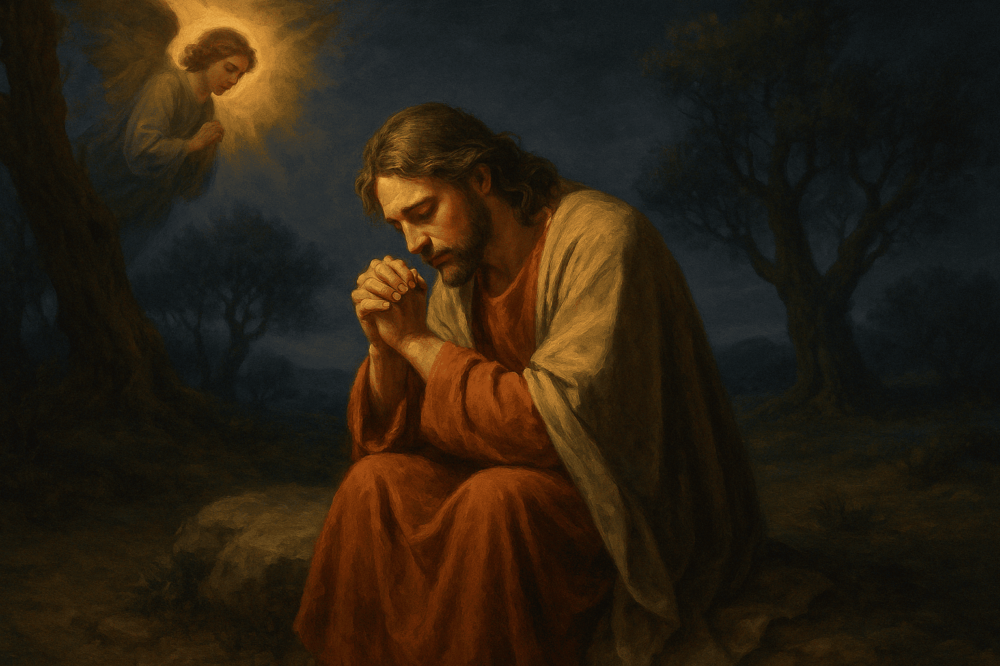
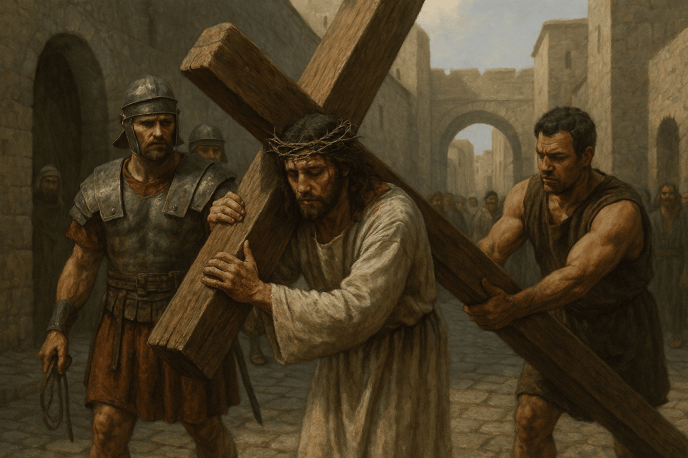

Sinal da cruz
Pelo sinal da Santa Cruz, livrai-nos Deus, nosso Senhor, dos nossos inimigos. Em nome do Pai, do
Filho e do Espírito Santo. Amém!
Oferecimento
Divino Jesus, nós Vos oferecemos este terço que vamos rezar, meditando nos mistérios da Vossa
Redenção. Concedei-nos, por intercessão da Virgem Maria, Mãe de Deus e nossa Mãe, as virtudes
que nos são necessárias para bem rezá-lo e a graça de ganharmos as indulgências desta santa
devoção.
Credo
Creio em Deus Pai Todo-Poderoso, Criador do céu e da terra; e em Jesus Cristo, seu único Filho,
nosso Senhor; que foi concebido pelo poder do Espírito Santo; nasceu da Virgem Maria,
padeceu sob Pôncio Pilatos, foi crucificado, morto e sepultado. Desceu à mansão dos mortos;
ressuscitou ao terceiro dia; subiu aos céus, está sentado à direita de Deus Pai todo-poderoso,
donde há de vir a julgar os vivos e os mortos; creio no Espírito Santo, na Santa Igreja
Católica, na comunhão dos Santos, na remissão dos pecados, na ressurreição da carne, na vida
eterna. Amém.
Pai nosso
Pai Nosso que estais no céu, santificado seja o vosso nome, vem a nós o vosso reino, seja feita a
vossa vontade assim na terra como no céu. O pão nosso de cada dia nos daí hoje, perdoai-nos as
nossas ofensas, assim como nós perdoamos a quem nos tem ofendido, não nos deixei cair em
tentação mas livrai-nos do mal. Amém.
3 Ave Maria
Pela Santissima Trindade
Avé Maria, cheia de graça, o Senhor é convosco, bendita sois vós entre as mulheres e bendito é o
fruto do vosso ventre, Jesus. Santa Maria, Mãe de Deus, rogai por nós pecadores, agora e na hora
da nossa morte. Amém.
Glória ao Pai, ao Filho e ao Espírito Santo
Ó meu Jesus, perdoai-nos!
Ó meu Jesus, perdoai-nos, livrai-nos do fogo do inferno, levai as almas todas para o céu e
socorrei principalmente aquelas que mais precisarem da vossa misericórdia.
A Agonia de Jesus no Horto das Oliveiras
Primeiro Mistério Doloroso
"Pai, se queres, afasta de mim este cálice; contudo, não se faça a minha vontade, mas a tua."
[...] Entrando em agonia, orava com mais insistência. E o seu suor tornou-se como gotas de
sangue, que caíam no chão.
Lucas 22,39-46
• 1 Pai-Nosso, 10 Ave-Maria •

Glória ao Pai, ao Filho e ao Espírito Santo
Ó meu Jesus, perdoai-nos!
Ó meu Jesus, perdoai-nos, livrai-nos do fogo do inferno, levai as almas todas para o céu e
socorrei principalmente aquelas que mais precisarem da vossa misericórdia.
A Flagelação de Jesus
Segundo Mistério Doloroso
"Pilatos então tomou Jesus e mandou açoitá-lo."
João 19,1
• 1 Pai-Nosso, 10 Ave-Maria •
Glória ao Pai, ao Filho e ao Espírito Santo
Ó meu Jesus, perdoai-nos!
Ó meu Jesus, perdoai-nos, livrai-nos do fogo do inferno, levai as almas todas para o céu e
socorrei principalmente aquelas que mais precisarem da vossa misericórdia.
A Coroação de Espinhos
Terceiro Mistério Doloroso
"Os soldados teceram uma coroa de espinhos e a colocaram na cabeça de Jesus. Vestiram-no com um
manto vermelho e, aproximando-se dele, diziam: ‘Salve, rei dos judeus!’ E batiam nele."
João 19,2-3
• 1 Pai-Nosso, 10 Ave-Maria •
Glória ao Pai, ao Filho e ao Espírito Santo
Ó meu Jesus, perdoai-nos!
Ó meu Jesus, perdoai-nos, livrai-nos do fogo do inferno, levai as almas todas para o céu e
socorrei principalmente aquelas que mais precisarem da vossa misericórdia.
Jesus carrega a cruz até o Calvário
Quarto Mistério Doloroso
"Eles então levaram Jesus. E ele, carregando a cruz, saiu para o lugar chamado Calvário, em
hebraico Gólgota."
João 19,16-17
• 1 Pai-Nosso, 10 Ave-Maria •

Glória ao Pai, ao Filho e ao Espírito Santo
Ó meu Jesus, perdoai-nos!
Ó meu Jesus, perdoai-nos, livrai-nos do fogo do inferno, levai as almas todas para o céu e
socorrei principalmente aquelas que mais precisarem da vossa misericórdia.
A Crucificação e Morte de Jesus
Quinto Mistério Doloroso
"Quando chegaram ao lugar chamado Calvário, crucificaram Jesus." [...]
"Então Jesus deu um forte grito e disse: ‘Pai, em tuas mãos entrego o meu espírito.’ Dizendo
isso, expirou."
Lucas 23,33-46
• 1 Pai-Nosso, 10 Ave-Maria •
Glória ao Pai, ao Filho e ao Espírito Santo
Ó meu Jesus, perdoai-nos!
Ó meu Jesus, perdoai-nos, livrai-nos do fogo do inferno, levai as almas todas para o céu e
socorrei principalmente aquelas que mais precisarem da vossa misericórdia.
Agradecimento
Infinitas graças vos damos, ó Soberana Rainha, pelos benefícios que todos os dias recebemos de
vossas mãos maternais. Dignai-vos, agora e para sempre tomar-nos debaixo do vosso poderoso
amparo e para mais vos agradecer, vos saudamos com uma Salve Rainha:
Salve Rainha
Salve Rainha, Mãe de misericórdia, vida, doçura, esperança nossa, salve! A vós bradamos os
degredados filhos de Eva, a vós suspiramos, gemendo e chorando neste vale de lágrimas. Eia,
pois, Advogada nossa, esses vossos olhos misericordiosos a nós volvei, e depois deste desterro,
mostrai-nos Jesus, bendito fruto do vosso ventre. Ó clemente, ó piedosa, ó doce e sempre Virgem
Maria. Rogai por nós Santa Mãe de Deus. Para que sejamos dignos das promessas de Cristo.